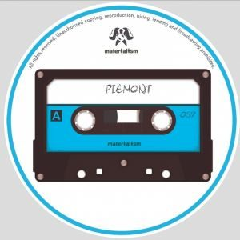

Piemont - Like Breathing


Label: MaterialismScore: 7/10
German producers Piemont have been on a rich vein of form recently, having seen their music crop up on some of the scene’s foremost tech-house labels. As consistent as they are impressive, they churns out tracks like it’s nobody’s business, although to give them their dues they nearly always impress thanks to the wide-ranging permutations which shine throughout their work.
Their latest outing for Greek man of the moment Mihalis Safras’ Materialism label is no different in that regard. Sticky and sultry, it’s a suitable offering for tis time of year if nothing else. ‘Like Breathing’ is a delicate and nimble offering, and it leads us down a route that’s laden with dexterous tidbits aplenty.
The guys blistering run of form continues on Spindrift. As the synths become more pronounced, so too does the intensity, resulting in an offering that’s a nice counter-balance to the original. A most satisfactory return for a label – and a duo – who’ve firmly got our attention at this rate.